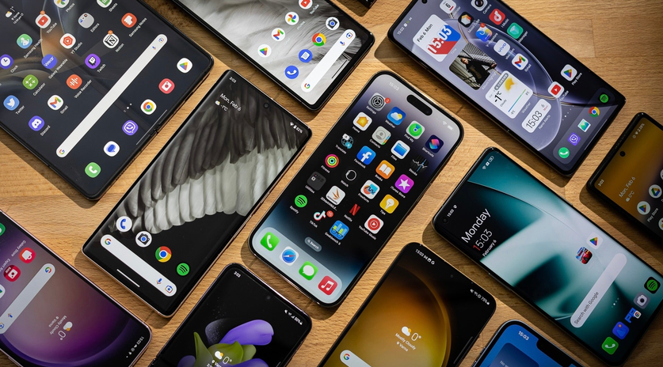

(You may want to first read my writing on the Loneliness Epidemic as these issues sort of go hand and hand.)
The most common answer that I see from people when this topic is being discussed is the economy.
Which the economy is awful, and has been awful for long while now. And when you have a hard time affording to pay the bills, get out on your own, or while being in debt, then it's just like yeah "why would I want a kid?"
Yet interestingly enough, it's always seemed that people that are around the ranks of "upper middle class" are the ones who always seem so on the fence about having kids. The general mentality that I've seen is basically like "Well I have X expenses, and I want to save up Y money, and I have so much going on with work and with XYZ that having kids blah blah blah."
I'm not hating on anyone for their busy schedules or even their indecisiveness, I would be one to talk, I don't have kids and likely never will. This isn't me ranting or hating, but rather trying to understand the cause.
But it always seems like "poor" families tend to have way more kids than "wealthy" families. Like I've seen families where only one parent is working, and they're on state benefits, and they have 3+ kids while families raking in leaves maybe have 2 kids.
Plenty of families actually had kids during the Great Depression as a matter of fact! And America is still the "wealthiest" country out there (albeit that's because the 1% is largely in America to tip the scales.)
But there was another factor just introduced over the past decades that I think is an even more probable cause than just the economy by itself....
I feel that technology, or rather the Internet, becomes of my biggest scapegoats in every situation. And this one is no exception lol.
I think part of the reason for why people won't have kids is because they have too much other stuff going on. Yes, work and expenses, but even in leisure time! Endless shows and movies to watch, endless consumption on social media with videos or shorts, tons of videogames, drugs to experiment with, or even pr0n (if yk yk.)
The United States of America turned into Corporate America, in which consumption is our way of life. It's like "Hmmmm, maybe I should have a kid, I have nothing....NO WAY, THEY MADE ANOTHER FALLOUT GAME???? GOTTA HAVE IT!
Like back in any other time period, you had nothing else better to do but have kids...right? Like unless you're out in the woods all way, or really like reading books, what were you gonna do in any other time period throughout history? Go on a crusade somewheres?
Oh hey, these smartphone devices with these social media apps that are designed to hold all your attention are actually succeeding in holding everyone's attention from other things!!
It's so funny because other "poor" nations like in Africa or even Latin America, have way more healthy population demographics than the West. They don't have all the technology, internet, or other rot that we have to denature and corrupt them lol.
I also see it as that less people are getting into relationships than before, which will obviously cause less people to have kids.
I view that as the fact that our social interaction and communication abilities are gone, which has contributed to the Loneliness Epidemic.You should look at the link towards the top if you haven't already read that blog!
It's really hard to come up with any viable solution when I feel like at a societal level, we are all sort of the problem.
For the longest time, we tried immigration. We had tons of migrants come into the country for the sake of supporting our work force, or else the population would've cratered way before now.
And due to foreign nations having healthier population cycles, and us importing them to the West, that led to all of these cracked out "WHITE REPLACEMENT THEROIES" lol. It sucks because there's real issues that are using cover by the dumb conspiracies.
But anyways, we could like have the government ban phones, the internet, social meida or whatever but everyone would have a BIRD over that, and for some good reason I suppose.
I think we should at least push to ban phones in schools. Instead of pusing for age (ID) verification for social media, let's just ban the algorithms designed to keep us addicted to these platforms.
I believe that if the government did enact policies that it should, (like better financial support for families) then some more people would have kids, but while I think it's a good start, it is only putting a bandaid on the wound.
A lot of this boils down to personal responsibility....like parents not giving unrestricted smartphone access to their kids....which might honestly be a lost cause.
If the population does go way down, I won't be so depressed over it. Like yeah, the workforce so therefore society will take a hit, but I'll do whatever I can to get by, and put my faith in God that if all else fails, he will guide me.
Return to main page